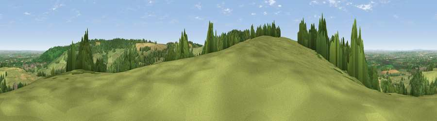

Viewpoint near Buckland
#7590 in England · top 14% of its area beats it · near BucklandThe view, rendered

A 360° render of this exact spot computed from the terrain model, tree cover and land cover — summer colours, afternoon light, calibrated against photographs of famous viewpoints. Real trees, hedges and buildings will differ in detail.
The panorama
Grey silhouette: terrain skyline in each direction (720 bearings, Earth curvature and refraction included). Dashed green: skyline with trees (+15 m) and buildings (+8 m) as obstacles. Blue strip: how far the ground is visible on each bearing.
Where the view opens
Wedge length = distance to the farthest visible ground on that bearing (vegetation-aware). Rings at 10, 25 and 50 km.
What fills the view
59% grassland · 26% woodland · 13% cropland · 2% built-up
Angular shares of the visible panorama (visual magnitude), not map area. Landscape diversity 0.44 (0–1 Shannon).
Key numbers
More beautiful places nearby
The staircase of upgrades: each row has a higher view potential than everything closer. Driving times are estimates from straight-line distance, calibrated against real road routing — check an actual route before setting out.
| Place | Direction | Drive | Score |
|---|---|---|---|
| Viewpoint near Laverton | W · 0 km | ~1 min | 73.3 |
| Viewpoint near Stanton | SSW · 1 km | ~3 min | 74.2 |
| Viewpoint near Stanton | SSW · 3 km | ~6 min | 75.8 |
| Broadway Hill | ENE · 3 km | ~7 min | 77.7 |
| Viewpoint near Elmley Castle | WNW · 12 km | ~22 min | 80.5 |
| Nottingham Hill | WSW · 13 km | ~23 min | 80.9 |
| Bredon Hill | WNW · 14 km | ~25 min | 83.0 |
| Black Hill | W · 32 km | ~50 min | 83.1 |
52.01494, -1.87574 · source: screening · position refined by local search. Computed location — check access rights before visiting.